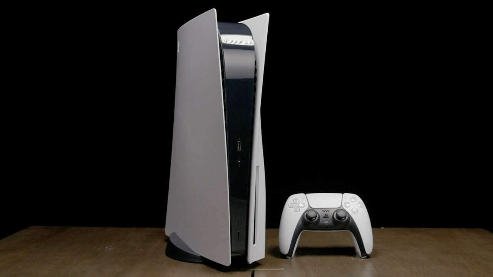

PlayStation5 released on November 12, 2020. The strongest home console to date, the PlayStation 5 or the PS5, is a grand achievement from Sony. The most recent system from Sony, the PS5 is a major step into the future of technology. With the 825 GB of storage, the PS5 promised PlayStation users a new way to experience gaming. With two versions of the consoles releasing on day one, there is the digital download version, which eliminated CD usage by only allowing the console to only process digitally downloaded games. The PS5 sold out in the first day that it released, huge demands were made for this console having many people struggling to receive one with how much praise the console was receiving. The console isn't even half way done with its life span, and it already has garnered several elite games best to play on the PS5. The PS5 still has several years left in its life, and it looks to be a very promising set of years.
